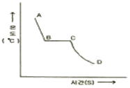
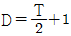
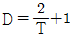
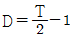
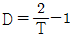

자기비파괴검사기능사 (2015-10-10 기출문제)
1과목: 자기탐상시험법
1. 강용접부를 통상의 방법으로 초음파탐상검사 할 때 가장 검출이 곤란한 것은?
- 블로우홀
- 홈면 융합불량
- 내부 용입불량
- 종균열
(정답률: 65%)

2. 방사선투과시험에 사용되는 X선은?
- 흡수 X선
- 연속 X선
- 산란 X선
- 특성 X선
(정답률: 69%)
3. 각종 비파괴검사에서 평가할 수 있는 항목과 거리가 먼 것은?
- 시험체 내의 결함 검출
- 시험체의 내부구조 평가
- 시험체의 물리적 특성 평가
- 시험체 내부의 결함 발생시기
(정답률: 79%)
4. 다음 결함 중 침투탐상시험으로 발견이 불가능한 것은?
- 갈라짐
- 내부 기공
- 언더컷
- 분화구형 균열
(정답률: 86%)
5. 시험체의 내부와 외부의 압력차에 의해 유체가 결함을 통해 흘러 들어가거나 나오는 것을 감지하는 방법으로 압력용기나 배관 등에 주로 적용되는 비파괴검사법은?
- 누설검사
- 침투탐상검사
- 자분탐상검사
- 초음파탐상검사
(정답률: 91%)
6. 높은 원자번호를 갖는 두꺼운 재료의 검사에 적용하는 비파괴검사 방법은?
- 적외선검사(IRT)
- 중성자검사(NRT)
- 방사선투과검사(RT)
- 스트레인측정(ST)
(정답률: 79%)
7. 침투탐상검사에 대한 설명으로 가장 옳은 것은?
- 전기설비를 반드시 필요로 한다.
- 다공성의 재질에만 적용한다.
- 흡수성이 좋은 재료만 적용한다.
- 검사원의 기량에 따라 검사결과가 좌우될 수 있다.
(정답률: 79%)
8. 자분탐상시험으로 발견될 수 있는 대상으로 가장 적합한 것은?
- 비자성체의 다공성 결함
- 철편에 있는 탄소 함유량
- 강자성체에 있는 피로균열
- 배관 용접부내의 슬래그 개재물
(정답률: 85%)
9. 표면결함의 검출을 목적으로 하는 검사법 중 강자성체 및 비자성체에 어느 도체에도 적용이 가능하고, 고온부의 탐상이 가능한 검사법은?
- 와전류탐상검사(ECT)
- 자분탐상검사(MT)
- 누설자속탐상검사(MFLT)
- 침투탐상검사(PT)
(정답률: 61%)
10. 초음파탐상검사에 대한 설명으로 틀린 것은?
- 일반적으로 펄스-에코 반사법이 적용된다.
- 표피효과가 발생하기도 한다.
- 시험체의 두께 측정이 가능하다.
- 용접부, 주조품 등의 내부 결함검출에 이용된다.
(정답률: 74%)
11. 와전류탐상검사에서 내삽코일을 사용하여 관의 보수검사를 수행할 때, 관의 내경이 10mm이고 코일의 평균 직경이 9mm라고 하면 충진율은?
- 90%
- 81%
- 75%
- 56%
(정답률: 61%)
12. 누설검사에 추적가스로 사용되는 불활성 기체의 성질 중 방전관에서 방전시켰을 때 나타나는 발광색과의 연결이 틀린 것은?
- 헬륨(He) - 황백색
- 네온(Ne) - 주황색
- 크립톤(Kr) - 황자색
- 아르곤(Ar) - 적색
(정답률: 67%)
13. 자분탐상검사에 사용되는 자분이 가져야 할 자기 특성은?
- 높은 투자율, 낮은 전류자기 및 낮은 보자력
- 높은 투자율, 높은 전류자기 및 높은 보자력
- 낮은 투자율, 낮은 전류자기 및 높은 보자력
- 낮은 투자율, 높은 전류자기 및 높은 보자력
(정답률: 71%)
14. 누설검사의 1atm을 다른 단위로 환산한 것 중 틀린 것은?
- 14.7psi
- 760torr
- 980kg/cm2
- 101.3kPa
(정답률: 66%)
15. 다음 중 자분탐상검사의 주요 3과정에 속하지 않는 것은?
- 자화
- 전처리
- 자분 적용
- 자분모양에 의한 관찰 및 기록
(정답률: 78%)
16. 극간법으로 용접라인을 검사하기 위하여 극간위치를 서로 90°로 교차시켜 중첩하여 검사를 한다. 이 때 자계의 방향과 용접 라인의 방향은 몇 도로 유지하여 검사를 수행하는 것이 효과적인가?
- 0°
- 45°
- 60°
- 80°
(정답률: 74%)
17. 프로드법으로 자분탐상시험할 때 소요 전류의 산정은 어떻게 하는가?
- 부품의 종류
- 프로드의 간격
- 부품의 직경
- 부품의 길이
(정답률: 85%)
18. 자외선조사장치에 대한 설명으로 틀린 것은?
- 자외선의 강도 측정은 조도계로 측정한다.
- 자외선조사장치는 광원이 안정된 후 측정한다.
- 자외선조사장치에서 나오는 자외선은 파장은 320~400nm의 영역으로서 근자외선이다.
- 자외선조사장치는 일반적으로 고압 수은 등에 필터가 부착된 조사등과 안정기로 구성되어 있다.
(정답률: 57%)
19. 자분탐상시험의 극간법과 프로드법을 비교한 것으로 틀린 것은?
- 극간법은 탐상면에 손상을 주지 않는다.
- 프로드법은 대형구조물의 국부검사에 좋다.
- 화재의 위험이 있을 시에는 극간법을 적용한다.
- 극간법에서는 전극지시의 의사지시모양이 나타난다.
(정답률: 45%)
20. 자분탐상시험에서 전도체에 흐르는 전류는 어떠한 작용을 하는가?
- 전도체 주위에 동심 자장을 만든다.
- 전도체 내부에 자극을 만든다.
- 전도체를 부도체로 변화시킨다.
- 전도체 외부에 자극을 만든다.
(정답률: 67%)
2과목: 자기탐상관련규격
21. 다음 중 탈자 여부를 확인할 수 있는 것이 아닌 것은?
- 자장 지시계(Magnetic Field Indicator)
- 테슬러 미터(Tesia meter)
- 자기 컴퍼스(Magnetic compass)
- 암미터(Ammeter)
(정답률: 65%)
22. 다음 중 원형자장을 발생시키는 자화 방법이 아닌 것은?
- 축통전법
- 직각통전법
- 전류관통법
- 극간법
(정답률: 62%)
23. 자분탐상시험에서 원형자화를 시키기 위한 방법의 설명으로 옳은 것은?
- 부품의 횡단면으로 코일을 감는다.
- 부품의 길이 방향으로 전류를 흐르게 한다.
- 요크(yoke)의 끝을 부품길이 방향으로 놓는다.
- 부품을 전류가 흐르고 있는 코일 가운데 놓는다.
(정답률: 63%)
24. 다음 중 건식자분의 특성으로 가장 옳은 것은?
- 대량부품 검사에 좋다.
- 미세결함 검출에 좋다.
- 표면결함 탐지에 좋다.
- 과잉의 자분은 공기를 불어 제거할 수 있다.
(정답률: 69%)
25. 다음 중 자분탐상검사로 검출하기 가장 어려운 결함은?
- 자력선의 방향에 수직한 표면 균열
- 자력선의 방향에 평행한 표면 균열
- 자력선의 방향에 수직한 표면 직하의 균열
- 전류의 흐름방향에 평행한 표면 직하의 균열
(정답률: 54%)
26. 자분탐상시험에서 습식연속법으로 시험할 때 현탁자분을 적용하는 시기는?
- 전류를 통전시킨 직후
- 전류를 통전시키기 직전
- 전류가 통전되고 있는 동안
- 전류를 통전시키기 30초전
(정답률: 65%)
27. 길이 10인치, 직경이 4인치인 시험체의 선형자화 전류를 구하면? (단, L/D가 2 이상이며 4 미만인 부품이며, 코일의 감은 횟수는 5회이다.)
- 450A
- 900A
- 1800A
- 3600A
(정답률: 49%)
28. 철강재료의 자분탐상 시험방법 및 자분모양의 분류(KS D 0213)에 따라 자분을 선택할 때 고려할 대상과 관계가 먼 것은?
- 시험체의 재질
- 자분의 입도
- 자분의 색조
- 전류의 크기
(정답률: 42%)
29. 철강재료의 자분탐상 시험방법 및 자분모양의 분류(KS D 0213)에 의한 자화 방법으로 시험체 또는 시험할 부위를 전자석 또는 영구자석의 자극 사이에 놓고 검사하는 방법의 부호는?
- P
- M
- C
- I
(정답률: 77%)
30. 철강재료의 자분탐상 시험방법 및 자분모양의 분류(KS D 0213)에 의거 형광자분을 사용하여 자분탐상할 때 관찰면에서의 자외선 강도로 적절하지 않는 것은?
- 500μm/cm2
- 1000μm/cm2
- 1100μm/cm2
- 1150μm/cm2
(정답률: 77%)
31. 철강재료의 자분탐상 시험방법 및 자분모양의 분류(KS D 0213)에 따른 자분탐상시험을 할 때 자계의 방향을 교대로 바꾸면서 자계의 강도를 감쇄시키는 것을 무엇이라고 하는가?
- 탈자
- 자화
- 통전
- 관찰
(정답률: 83%)
32. 철강재료의 자분탐상 시험방법 및 자분모양의 분류(KS D 0213)에서 잔류법에 일반적으로 적용하는 통전시간은?
- 1/20~1/10초
- 1/4~1초
- 1~3초
- 5~10초
(정답률: 88%)
33. 철강재료의 자분탐상 시험방법 및 자분모양의 분류(KS D 0213)에 따른 탐상시 주의사항을 옳게 설명한 것은?
- 자기펜자국의 의사모양은 축통전법 사용시 발생하므로 프로이드법을 사용하면 사라진다.
- 의사모양인 전류지시는 전류를 작게 하거나 잔류법으로 재시험하면 자분모양이 사라진다.
- 충격전류를 사용할 때는 일반적으로 통전시간이 매우 길기 때문에 연속법을 사용하여야 한다.
- 잔류법 사용시 자화조작 후 자분모양을 관찰할 때 다른 시험체를 접촉시키면 좋은 효과가 있다.
(정답률: 69%)
34. 철강재료의 자분탐상 시험방법 및 자분모양의 분류(KS D 0213)에서 C형 표준시험편을 시험면에 밀착할 때 사용되는 양면 정착테이프의 두께의 최대치는 얼마인가?
- 10μW
- 30μW
- 50μW
- 100μW
(정답률: 45%)
35. 철강재료의 자분탐상 시험방법 및 자분모양의 분류(KS D 0213)에서 C형 표준시험편 판 두께(μW)로 옳은 것은?
- 10
- 20
- 30
- 50
(정답률: 64%)
36. 철강재료의 자분탐상 시험방법 및 자분모양의 분류(KS D 0213)에 따르면 잔류법을 사용하는 경우에 자화 조작 후 자분모양의 관찰을 끝낼 때까지 시험면에 다른 시험체 또는 그 밖의 강자성체를 접촉시키면 안 되는 이유는?
- 자기펜자국이 생긴다.
- 전류지시가 생긴다.
- 전극지시가 생긴다.
- 자극지시가 생긴다.
(정답률: 66%)
37. 압력 용기-비파괴 시험 일반(KS B 6752)에서 요크의 인상력에 대한 사항 중 틀린 것은?
- 교류 요크는 최대극간거리에서 최대한 4.5kg의 인상력을 가져야 한다.
- 영구자석 요크는 최대극간거리에서 최소한 18kg의 인상력을 가져야 한다.
- 영구자석 요크의 인상력은 사용 전 매일 점검 하여야 한다.
- 모든 요크는 수리할 때마다 인상력을 점검하여야 한다.
(정답률: 55%)
38. 철강재료의 자분탐상 시험방법 및 자분모양의 분류(KS D 0213)에 따라 일반적인 담금질한 부품에 잔류법 적용시 필요한 자계강도(A/m)는?
- 1200~2000
- 2400~3600
- 6400~8000
- 12000이상
(정답률: 44%)
39. 철강재료의 자분탐상 시험방법 및 자분모양의 분류(KS D 0213)에 따라 검사를 수행할 때 사용할 수 없는 시험장치는?
- 직류식 자화장치
- 영구자석을 이용한 자화장치
- 자외선의 파장이 320~400nm 인 자외선조사장치
- 필터면 10cm 의 거리에서 자외선강도가 80μW/cm2인 자외선 조사장치
(정답률: 75%)
40. 철강재료의 자분탐상 시험방법 및 자분모양의 분류(KS D 0213)에 의한 축통전법에서 도체 패드(pad)에 관한 설명으로 틀린 것은?
- 시험품과 전극사이에 끼워서 사용한다.
- 전류를 잘 전도하는 것이어야 한다.
- 시험코일의 내면에 부착시켜 사용한다.
- 시험품의 국부적 소손을 방지하는 역할을 한다.
(정답률: 64%)
3과목: 금속재료일반 및 용접일반
41. 철강재료의 자분탐상 시험방법 및 자분모양의 분류(KS D 0213)에 따르면, 전류를 이용한 자화장치는 전류계를 갖추도록 되어 있다. 다만 어떤 경우에 이 계기를 생략할 수 있는가?
- 코일형 자화장치
- 전자석형 자화장치
- 통전형 자화장치
- 프로드형 자화장치
(정답률: 57%)
42. 철강재료의 자분탐상 시험방법 및 자분모양의 분류(KS D 0213)에 따른 A형 시험편에 Al-7/50(원형)이라고 쓰여 있을 때 7/50의 의미로 옳은 것은?
- 사선의 왼쪽은 편의 두께, 사선의 오른쪽은 인공흠의 깊이, 숫자의 단위는 mm이다.
- 사선의 왼쪽은 인공흠의 가로 길이, 사선의 오른쪽은 인공흠의 세로길이, 숫자의 단위는 mm이다.
- 사선의 왼쪽은 인공흠의 깊이, 사선의 오른쪽은 판의 두께, 숫자의 단위는 μW이다.
- 사선의 왼쪽은 판의 두께, 사선의 오른쪽은 인공흠의 깊이, 숫자의 단위는 μW이다.
(정답률: 73%)
43. Al-Si계 주조용 합금은 공정점에서 조대한 육각 판상 조직이 나타난다. 이 조직의 개량화를 위해 첨가하는 것이 아닌 것은?
- 금속납
- 금속나트륨
- 수산화나트륨
- 알칼리염류
(정답률: 48%)
44. 금속의 소성변형에서 마치 거울에 나타나는 상이 거울을 중심으로 하여 대칭으로 나타나는 것과 같은 현상을 나타내는 변형은?
- 쌍정변형
- 전위변형
- 벽계변형
- 딤플변형
(정답률: 82%)
45. 스텔라이트(stellite)에 대한 설명으로 틀린 것은?
- 열처리를 실시하여야만 충분한 경도를 갖는다.
- 주조한 상태 그대로를 연삭하여 사용하는 비철합금이다.
- 주요 성분은 40~55%Co, 25~33%Cr, 10~20%C, 5%Fe이다.
- 600℃ 이상에서는 고속도강보다 단단하며, 단조가 불가능하고, 충격에 의해서 쉽게 파손된다.
(정답률: 43%)
46. 다음의 조직 중 경도가 가장 높은 것은?
- 시멘타이트
- 페라이트
- 오스테나이트
- 트루스타이트
(정답률: 69%)
47. 태양열 이용 장치의 적외선 흡수재료, 로켓연료 연소 효율 향상에 초미립자 소재를 이용한다. 이 재료에 관한 설명 중 옳은 것은?
- 초미립자 제조는 크게 체질법과 고상법이 있다.
- 체질법을 이용하면 청정 초미립자 제조가 가능하다.
- 고상법은 균일한 초미립자 분체를 대량 생산하는 방법으로 우수하다.
- 초미립자의 크기는 100nm의 콜로이드(colloid) 입자의 크기와 같은 정도의 분체라 할 수 있다.
(정답률: 54%)
48. 10~20%Ni, 15~30%Zn에 구리 약 70%의 합금으로 탄성재료나 화학기계용 재료로 사용되는 것은?
- 양백
- 청동
- 엘린바
- 모넬메탈
(정답률: 48%)
49. 다음 중 산과 작용하였을 때 수소 가스가 발생하기 가장 어려운 금속은?
- Ca
- Na
- Al
- Au
(정답률: 62%)
50. 황동의 합금 조성으로 옳은 것은?
- Cu + Ni
- Cu + Sn
- Cu + Zn
- Cu + Al
(정답률: 65%)
51. 용융 금속의 냉각곡선에서 응고가 시작되는 지점은?

- A
- B
- C
- D
(정답률: 68%)
52. Y합금의 일종으로 Ti과 Cu를 0.2%정도씩 첨가한 것으로 피스톤용 재료로 사용되는 합금은?
- 라우탈
- 코비탈륨
- 두랄루민
- 하이드로 날륨
(정답률: 55%)
53. 물과 같은 부피를 가진 물체의 무게와 물의 무게와의 비는?
- 비열
- 비중
- 숨은열
- 열전도율
(정답률: 83%)
54. 강과 주철을 구분하는 탄소의 함유량은 약 몇 %인가?
- 0.1%
- 0.5%
- 1.0%
- 2.0%
(정답률: 72%)
55. 베어링(bearing)용 합금의 구비조건에 대한 설명 중 틀린 것은?(오류 신고가 접수된 문제입니다. 반드시 정답과 해설을 확인하시기 바랍니다.)
- 마찰계수가 적고 내식성이 좋을 것
- 충분한 취성을 가지며 소착성이 클 것
- 하중에 견디는 내압력과 저항력이 클 것
- 주조성 및 절삭성이 우수하고 열전도율이 클 것
(정답률: 57%)
56. 용강 중에 기포나 편석은 없으나 중앙 상부에 큰 수축공이 생겨 불순물이 모이고, Fe-Si, Al 분말 등의 강한 탈산제로 완전 탈산한 강은?
- 킬드강
- 캡드강
- 림드강
- 세미킬드강
(정답률: 73%)
57. 게이지용강이 갖추어야 할 성질을 설명한 것 중 옳은 것은?
- 팽창계수가 보통 강보다 커야 한다.
- HRC 45 이하의 경도를 가져야 한다.
- 시간이 지남에 따라 치수 변화가 커야 한다.
- 담금질에 의하여 변형이나 담금질 균열이 없어야 한다.
(정답률: 68%)
58. 가스용접에서 용접봉과 모재와의 관계식으로 옳은 것은? (단, T : 모재의 두께(mm), D : 용접봉의 지름(mm))




(정답률: 66%)
59. 비교적 큰 용적이 단락되지 않고 옮겨 가는 형식이며, 서브머지도 아크 용접과 같이 대전류 사용시에 볼 수 있으며, 일명 펀치 효과형인 용적 이행은?
- 단락형
- 글로뷸러형
- 스프레이형
- 펄스형
(정답률: 56%)
60. 정격 2차 전류 200A, 정격 사용률 40%의 아크용접기로 150A의 용접전류를 사용하여 용접하는 경우 허용사용률은 약 몇 %인가?
- 22.5
- 60
- 71
- 80
(정답률: 52%)